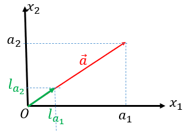
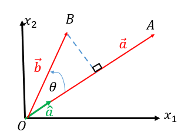
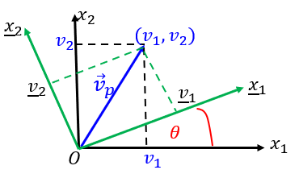
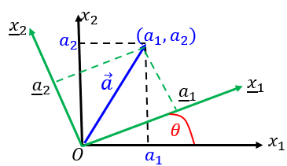
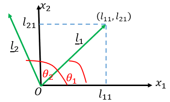

Chapter 3 Index Notation and Cartesian Tensors
In applied mathematical modelling particularly continuum mechanical modelling, in addition to scalars and vectors, we often encounter another type of physical quantities, namely tensors such as stress and strain. In this chapter, we first introduce a shorthand symbolism for writing complex formulae/equations involving vectors and tensors. Then we will introduce the basic calculus of Cartesian tensors.
3.1 Index Notation
Index notation is a shorthand notation for writing complex mathematical formulae/equations in a compact and succinct manner.
In index notation, we use the more systematic labelling \((x_1,x_2,x_3)\) for the tri-rectangular Cartesian coordinates of a point so that
\[ (x_1,x_2,x_3) \text{ represents } (x,y,z), \]
\[ (Ox_1,Ox_2,Ox_3) \text{ represents } (Ox,Oy,Oz), \]
\[ (v_1,v_2,v_3) \text{ represents } (v_x,v_y,v_z). \]
In addition, we use free index, summation index, Kronecker Delta and various other symbols to simplify presentation of complex equations. The rest of this section is organized as follows. We first introduce the basic rules and convention, then the Kronecker delta, and then the basic manipulations with index notation.
3.1.1 Convention and Rules
Free Index
Consider
\[ v_1 = a_{11}\bar{v}_1 + a_{12}\bar{v}_2, \tag{3.1} \]
\[ v_2 = a_{21}\bar{v}_1 + a_{22}\bar{v}_2. \notag \]
If we let the subscript \(i\) take on the numbers \(1\) and \(2\) one at a time, we can write the above two equations as one,
\[ v_i = a_{i1}\bar{v}_1 + a_{i2}\bar{v}_2. \tag{3.2} \]
If a subscript appears precisely once in each term of an expression or equation, it is called a “free index”, and is to be successively assigned each value in its range.
Remark. If there are two free indices appearing in an equation such as
\[ B_{ij} = A_{ip}A_{jp}, \qquad (i=1,2,3,4;\ j=1,2,3,4) \]
then the equation is a short-hand writing of \(16\) equations.
Summation Index
Equation (3.2) can be written as
\[ v_i = \sum_{j=1}^2 a_{ij}\bar{v}_j. \tag{3.3} \]
If we adopt the convention that a subscript which appears precisely twice in a term indicates a summation with the index running through the integers over the index range, we can write (3.3) as
\[ v_i = a_{ij}\bar{v}_j. \tag{3.4} \]
If a subscript occurs precisely twice in one term of an expression, it may or may not occur precisely twice in any other term. It is to be summed over its range of values, and is known as a “dummy index” or “summation index”.
Remark 1: The repeated index can be assigned any letter and so
\[ v_i = a_{ij}\bar{v}_j = a_{ip}\bar{v}_p. \]
Remark 2: The particular choice of subscripts (free index or summation index) is immaterial provided that the rules are all satisfied. For example, the following equations are equivalent (represent exactly the same equations),
\[ v_i = a_{ij}\bar{v}_j, \qquad v_k = a_{kp}\bar{v}_p. \]
Differentiation Notation
A comma represents differentiation.
For example,
\[ v_{i,j} \text{ denotes } \frac{\partial v_i}{\partial x_j}. \]
Index Occurring More than Twice
If a subscript occurs more than twice in one term of an expression or equation, it is a mistake.
For example, the following equations are meaningless
\[ v_i = a_{ii}v_i. \]
Remark on range convention: Lower case literal subscripts shall have all values over their index range.
3.1.2 Kronecker Delta \(\delta_{ij}\) (Substitution Tensor)
The Kronecker delta, denoted by \(\delta_{ij}\), is defined by
\[ \delta_{ij} = \begin{cases} 1 & \text{if } i=j, \\ 0 & \text{if } i \ne j. \end{cases} \]
Using \(\delta_{ij}\), we can often simplify presentations.
\[ l_{11}l_{11} + l_{12}l_{12} = 1, \]
\[ l_{21}l_{21} + l_{22}l_{22} = 1, \]
\[ l_{11}l_{21} + l_{12}l_{22} = 0, \]
\[ l_{21}l_{11} + l_{22}l_{12} = 0 \]
can be expressed by
\[ l_{1j}l_{1j} = 1, \]
\[ l_{2j}l_{2j} = 1, \]
\[ l_{1j}l_{2j} = 0, \]
\[ l_{2j}l_{1j} = 0. \]
By using \(\delta_{ij}\), the above \(4\) equations can be expressed by a single expression
\[ l_{kj}l_{\ell j} = \delta_{k\ell}. \]
\[ \delta_{1p}a_p = \delta_{11}a_1 + \delta_{12}a_2 + \delta_{13}a_3 = a_1, \]
\[ \delta_{2p}a_p = \delta_{21}a_1 + \delta_{22}a_2 + \delta_{23}a_3 = a_2, \]
\[ \delta_{3p}a_p = \delta_{31}a_1 + \delta_{32}a_2 + \delta_{33}a_3 = a_3, \]
we have in general
\[ \delta_{ip}a_p = a_i \qquad \text{(i.e, replace the index $p$ of $a$ by $i$).} \]
Similarly, we can show that
\[ \delta_{ip}T_{pj} = T_{ij}. \]
If \(\mathbf e_1\), \(\mathbf e_2\) and \(\mathbf e_3\) are unit vectors perpendicular to each other, then
\[ \mathbf e_i \cdot \mathbf e_j = \delta_{ij}. \]
3.1.3 Manipulations with the Index Notation
Substitution
If
\[ a_i = T_{ip}b_p, \tag{3.5} \]
\[ b_i = V_{ip}c_p, \tag{3.6} \]
then, in order to substitute \(b_i\) in (3.6) into (3.5), we first need to change the free index in (3.6) from \(i\) to \(p\) and the dummy index \(p\) to some other letter so that
\[ b_p = V_{pq}c_q. \tag{3.7} \]
Now substituting (3.7) into (3.5) yields
\[ a_i = T_{ip}V_{pq}c_q. \]
Multiplication
If
\[ u = a_ib_i, \qquad v = c_id_i, \]
then
\[ uv = a_ib_ic_nd_n. \]
It is important to note that
\[ uv \ne a_ib_ic_id_i \ne \sum_{i=1}^3 a_ib_ic_id_i. \]
Factorisation
Consider
\[ T_{ij}n_j - \lambda n_i = 0. \tag{3.8} \]
Using the Kronecker delta, we have
\[ n_i = \delta_{ij}n_j \]
and thus (3.8) becomes
\[ T_{ij}n_j - \lambda\delta_{ij}n_j = 0 \]
which gives
\[ (T_{ij} - \lambda\delta_{ij})n_j = 0. \]
3.2 Orthogonal Rotation of Cartesian Axes
Cartesian Coordinate System
In ordinary 2-D space, the system defined by \(2\) mutually orthogonal directions with equal units of measurements is called Cartesian frame of reference.
Cartesian Vectors and Direction Cosines
A Cartesian vector \(\mathbf a\) in 2-D is a quantity with two components \(a_1\) and \(a_2\) expressed with a Cartesian frame of reference, i.e.
\[ \mathbf a=(a_1,a_2). \]
Let \(\hat{\mathbf a}\) be a unit vector in \(\mathbf a\), then the components of \(\hat{\mathbf a}\) along \(x_1\) and \(x_2\) are respectively
\[ l_{a1} = \text{ cosine of the angle between } \hat{\mathbf a} \text{ and } Ox_1, \]
\[ l_{a2} = \text{ cosine of the angle between } \hat{\mathbf a} \text{ and } Ox_2. \]

We define the unit vector
\[ \hat{\mathbf a} = (l_{a1},l_{a2}) \]
as the direction cosines of \(\mathbf a\). With the direction cosines, \(\mathbf a\) can be expressed as
\[ \mathbf a = |\mathbf a|\hat{\mathbf a}. \]
Scalar Product of Two Vectors and Projection of a Vector on a Line
Let \(\overrightarrow{OA}=\mathbf a\), \(\overrightarrow{OB}=\mathbf b\), then the scalar product of \(\mathbf a\) and \(\mathbf b\) is defined as
\[ \mathbf a \bullet \mathbf b = |\mathbf a||\mathbf b|\cos\theta = a_1b_1 + a_2b_2. \]

Let \(\hat{\mathbf a}\) be a unit vector on \(\mathbf a\), then
\[ \mathbf b \bullet \hat{\mathbf a} = |\mathbf b|\cos\theta, \]
which indicates that the projection of \(\mathbf b\) on a line is the scalar product of \(\mathbf b\) with a unit vector along the line.
Rotation of Axes
Consider the transformation of the coordinate frame by an arbitrary rotation. Fig 1 shows the original frame \(Ox_1x_2\), the new frame \(O\bar{x}_1\bar{x}_2\) and a vector \(\mathbf v=(v_1,v_2)\) in the \(Ox_1x_2\) system or \(\bar{\mathbf v}=(\bar{v}_1,\bar{v}_2)\) in the \(O\bar{x}_1\bar{x}_2\) system.

Let \(l_{ij}\) be the cosine of the angle between the \(Ox_i\) axis and the \(O\bar{x}_j\) axis, then the unit vector (direction cosines) of the \(O\bar{x}_j\) axis in the new system is \(\hat{x}_j=(l_{j1},l_{j2})\); the unit vector (direction cosines) of the \(O\bar{x}_j\) axis in the old system are \(\hat{x}_j=(l_{1j},l_{2j})\).
In system \(Ox_1x_2\), the projection of \(\mathbf v=(v_1,v_2)\) on the \(O\bar{x}_j\) axis is equal to the scalar product of \(\mathbf v\) with a unit vector along \(O\bar{x}_j\), we thus have
\[ \bar{v}_1 = v \bullet \hat{x}_1 = (v_1,v_2) \bullet (l_{11},l_{21}) = l_{11}v_1 + l_{21}v_2 = l_{i1}v_i, \]
\[ \bar{v}_2 = v \bullet \hat{x}_2 = (v_1,v_2) \bullet (l_{12},l_{22}) = l_{12}v_1 + l_{22}v_2 = l_{i2}v_i. \]
Similarly in system \(O\bar{x}_1\bar{x}_2\), the projection of \(\bar{v}=(\bar{v}_1,\bar{v}_2)\) on the \(Ox_j\) axis is equal to the scalar product of \(\bar{v}\) with a unit vector along \(Ox_j\), we thus have
\[ v_1 = \bar{v} \bullet \hat{x}_1 = (\bar{v}_1,\bar{v}_2) \bullet (l_{11},l_{12}) = l_{11}\bar{v}_1 + l_{12}\bar{v}_2 = l_{1i}\bar{v}_i, \]
\[ v_2 = \bar{v} \bullet \hat{x}_2 = (\bar{v}_1,\bar{v}_2) \bullet (l_{21},l_{22}) = l_{21}\bar{v}_1 + l_{22}\bar{v}_2 = l_{2i}\bar{v}_i. \]
Hence,
\[ \bar{v}_j = l_{ij}v_i, \qquad v_j = l_{ji}\bar{v}_i. \]
Properties of Direction Cosines \(l_{ij}\)
As \(\hat{x}_1=(l_{11},l_{12})\) and \(\hat{x}_2=(l_{21},l_{22})\) are orthogonal unit vectors, we have
\[ (l_{11},l_{12}) \bullet (l_{11},l_{12}) = l_{11}^2 + l_{12}^2 = 1, \]
\[ (l_{11},l_{12}) \bullet (l_{21},l_{22}) = l_{11}l_{21} + l_{12}l_{22} = 0 \]
or in index notation,
\[ l_{ki}l_{\ell i} = \delta_{k\ell}. \]
Similarly, we can obtain
\[ l_{ik}l_{i\ell} = \delta_{k\ell}. \]
3.3 CARTESIAN TENSORS
3.3.1 CARTESIAN VECTOR (CARTESIAN TENSOR OF ORDER ONE)
Def. A Cartesian vector, \(a\), in two dimensions is a quantity with two components \(a_1\) and \(a_2\) in the Cartesian frame \(Ox_1x_2\), which, under rotation of the coordinate frame to \(O\bar{x}_1\bar{x}_2\), become components \(\bar{a}_1\) and \(\bar{a}_2\) where
\[ \bar{a}_j = a \bullet \hat{x}_j = (a_1,a_2) \bullet (l_{1j},l_{2j}) = l_{ij}a_i. \tag{3.9} \]
where \(\hat{x}_j = (l_{1j},l_{2j})\) are the direction cosines of the \(O\bar{x}_j\) axis with respect to the coordinate frame \(Ox_1x_2\).

Example. Consider a force \(\mathbf F\) acting at a point \(P\) on the surface of an object. Suppose we know the components of the force in the \(x_1\) and the \(x_2\) directions, say, \(f_1\) and \(f_2\); the direction cosine of the outward normal \(\mathbf n\) at \(P\) is \((n_1,n_2)\) and the direction cosine of \(\hat{\mathbf t}\) is \((t_1,t_2)\).

Then, we can use (3.9) to calculate
\[ \text{normal force: } \qquad F_n = \mathbf F \bullet \mathbf n = f_in_i, \]
\[ \text{tangential force: } \qquad F_t = \mathbf F \bullet \hat{\mathbf t} = f_it_i. \]
3.3.2 SECOND ORDER CARTESIAN TENSORS
Definition. A second order Cartesian tensor, \(A\), in two dimensions is an entity having \(4\) components \(A_{ij}\), \(i,j=1,2\), in the Cartesian frame of reference \(Ox_1x_2\) which on rotation of the frame to \(Opq\) become
\[ A_{pq} = l_{ip}l_{jq}A_{ij}, \]
where \(l_p=(l_{1p},l_{2p})\) and \(l_q=(l_{1q},l_{2q})\) are the direction cosines of the \(Op\) and \(Oq\) axes with respect to the coordinate frame \(Ox_1x_2\).
By the orthogonal properties of \(l_{rs}\), we also have the inverse transformation
\[ A_{ij} = l_{ip}l_{jq}A_{pq}. \]
Remarks
- A 2nd order tensor may be written in matrix form
\[ A= \begin{pmatrix} A_{11} & A_{12} \\ A_{21} & A_{22} \end{pmatrix} \]
- The transformation law for 2nd order tensors can be expressed in terms of matrices,
\[ \bar{A} = L^TAL, \qquad A = L\bar{A}L^T. \]
- Definition: Symmetric tensors
If \(A_{ij}=A_{ji}\), \(A\) is said to be symmetric. In this case, there are only \(3\) distinct components,
\[ A= \begin{pmatrix} A_{11} & A_{12} \\ A_{12} & A_{22} \end{pmatrix}. \]
- Definition: Antisymmetric tensor
If \(A_{ij}=-A_{ji}\), \(A\) is said to be antisymmetric and such a tensor has the form as follows
\[ A= \begin{pmatrix} 0 & A_{12} \\ -A_{12} & 0 \end{pmatrix}. \]
- Definition: Transpose of Tensors
The tensor whose \(ij\) element is \(A_{ji}\) is called the transpose \(A^T\) of \(A\).
3.3.3 ALGEBRA OF TENSORS
Scalar Multiplication and Addition
If \(\alpha\) is a scalar and \(A\) is a second order tensor, the scalar product of \(\alpha\) and \(A\) is a tensor \(\alpha A\) each of whose components is \(\alpha\) times the corresponding component of \(A\).
The sum of two second order tensors is a second order tensor each of whose components is the sum of the corresponding components of the two tensors, i.e.,
\[ (A+B)_{ij} = A_{ij} + B_{ij}. \]
- Any tensor may be represented as the sum of a symmetric part and an antisymmetric part.
\[ A_{ij} = \frac{1}{2}(A_{ij}+A_{ji}) + \frac{1}{2}(A_{ij}-A_{ji}), \]
\[ herefore \qquad A = \frac{1}{2}(A+A^T) + \frac{1}{2}(A-A^T) \]
Contraction and Multiplication
- The operation of identifying two indices of a tensor and then summing on them is known as contraction. \(A_{ii}\) is the only contraction of \(A_{ij}\),
\[ A_{ii} = A_{11} + A_{22} \]
and this is a scalar.
- If \(A\) and \(B\) are two second order tensors, then
\[ C_{ijkm}=A_{ij}B_{km} \]
is a fourth-order tensor.
The product \(A_{ij}a_j\) of a vector \(a\) and a tensor \(A\) is a vector whose \(i\)th component is \(A_{ij}a_j\).
Notation of scalar product
\[ A \bullet B \text{ is a tensor with components } A_{ij}B_{jk}. \]
Note that the summation is over adjacent suffixes.
- The doubly contracted product
\[ A:B = A_{ij}B_{ij} \]
is a scalar.
Canonical Form of a Symymmetric Tensor
If \(l\) is an arbitrary unit vector, \(A \bullet l\) is a vector and, for certain \(l\), may have the same direction as \(l\) itself had. The two vectors \(A \bullet l\) and \(l\) would thus differ only in magnitude and we might write
\[ A \bullet l = \lambda l. \]
Writing this in component form
\[ A_{ij}l_j = \lambda l_i = \lambda\delta_{ij}l_j \]
or
\[ (A_{ij}-\lambda\delta_{ij})l_j = 0. \tag{3.10} \]
Definition: For \(l \ne 0\), the \(\lambda\) in (3.10) is called the eigen value of \(A\) and \(l\) is the associated eigen vector.
Now we will find the eigen values and eigen vectors. System (3.10) is a set of homogeneous equations for the unknowns \(l_j\) and so has non-zero solutions only if the determinant of the coefficient matrix vanishes. Thus the value of \(\lambda\) must be such that
\[ \det(A_{ij}-\lambda\delta_{ij}) = \begin{vmatrix} a_{11}-\lambda & a_{12} \\ a_{12} & a_{22}-\lambda \end{vmatrix} = 0 \]
Therefore, \[ \lambda_{1,2} = \frac{1}{2}(a_{11}+a_{22}) \pm \frac{1}{2}\sqrt{(a_{11}-a_{22})^2 + 4a_{12}^2}. \tag{3.11} \]
Assume \(\lambda_1 \ne \lambda_2\), then there will be two different eigen vectors corresponding to \(\lambda_1\) and \(\lambda_2\) respectively. The vector \(l_j=(l_{1j},l_{2j})\) associated with \(\lambda_j\) can be determined from system (3.10).
For \(\lambda=\lambda_1\), we have
\[ \begin{pmatrix} a_{11}-\lambda_1 & a_{12} \\ a_{12} & a_{22}-\lambda_1 \end{pmatrix} \begin{bmatrix} l_{11} \\ l_{21} \end{bmatrix} = \begin{bmatrix} 0 \\ 0 \end{bmatrix}. \tag{3.12} \]
As equations \(1\) and \(2\) in system (3.12) are linearly dependent, we obtain from the first equation,
\[ \frac{l_{21}}{l_{11}} = \frac{\lambda_1-a_{11}}{a_{12}}. \]

Suppose the angle between the characteristic direction \((l_{11},l_{21})\) of \(\lambda_1\) and the \(x_1\) axis is \(\theta_1\), then
\[ l_{11} = \cos\theta_1, \qquad l_{21} = \cos\left(\frac{\pi}{2}-\theta_1\right) = \sin\theta_1. \]
Thus
\[ \tan\theta_1 = \frac{l_{21}}{l_{11}} = \frac{\lambda_1-a_{11}}{a_{12}}. \]
Similarly, the characteristic direction \((l_{12},l_{22})\) of \(\lambda_2\) can be determined by
\[ \tan\theta_2 = \frac{l_{22}}{l_{12}} = \frac{\lambda_2-a_{22}}{a_{12}}. \]
In the following, we will show that, on rotation of the coordinate frame from \(Ox_1x_2\) to \(Ox_px_q\) where \(x_p\) and \(x_q\) are the characteristic directions corresponding respectively to \(\lambda_1\) and \(\lambda_2\), \(A\) has diagonal form in the new coordinate frame.
Let the eigen values be \(\lambda_{(p)} \ne \lambda_{(q)}\) for \(p \ne q\) and the associated directions are \(l_p=(l_{1p},l_{2p})\) and \(l_q=(l_{1q},l_{2q})\), then
\[ A_{ij}l_{jp} = \lambda_{(p)}l_{ip}, \qquad A_{ij}l_{jq} = \lambda_{(q)}l_{iq}. \tag{3.13} \]
where the repeated indices \((p)p\) do not represent summation, and \(l_{ip}=(l_{1p},l_{2p})\) is the direction associated with \(\lambda_{(p)}\).
\[(3.13)_1 \times l_{iq}: \qquad A_{ij}l_{jp}l_{iq} = \lambda_{(p)}l_{ip}l_{iq} = A_{ji}l_{ip}l_{jq},\]
\[(3.13)_2 \times l_{ip}: \qquad A_{ij}l_{jq}l_{ip} = \lambda_{(q)}l_{iq}l_{ip}.\]
As \(A_{ij}=A_{ji}\), we have from the above
\[ A_{ij}l_{ip}l_{jq} = \lambda_{(p)}l_{ip}l_{iq} = \lambda_{(q)}l_{ip}l_{iq}. \]
As \(\lambda_p \ne \lambda_q\) as assumed, the above equation is only possible if
\[ l_{ip}l_{iq} = l_{(p)} \bullet l_{(q)} = 0. \]
and so the vectors are orthogonal and thus
\[ l_{ip}l_{iq} = \delta_{pq}. \]
\[ herefore \qquad A_{pq} = l_{ip}l_{jq}A_{ij} = \lambda_{(p)}\delta_{pq}. \]
This merely says that \(A\) has diagonal form and its diagonal components are \(\lambda_1\) and \(\lambda_2\), i.e.,
\[ \bar{A}= \begin{pmatrix} \lambda_1 & 0 \\ 0 & \lambda_2 \end{pmatrix}. \]
The Del Operator and the Divergence Theorem
- The Del Operator \(\nabla\)
If \(\nabla\) operates on a scalar function of position \(\phi\), it produces a vector \(\nabla\phi\), i.e,
\[ \nabla = \begin{pmatrix} \dfrac{\partial}{\partial x_1} \\ \dfrac{\partial}{\partial x_2} \end{pmatrix}, \qquad \nabla\phi = \operatorname{grad}\phi = \begin{pmatrix} \dfrac{\partial\phi}{\partial x_1} \\ \dfrac{\partial\phi}{\partial x_2} \end{pmatrix}. \]
Remark: Let \(\mathbf n\) be a unit vector, the directional derivative of \(\phi\) along \(\mathbf n\) is,
\[ \frac{\partial\phi}{\partial n} = \nabla\phi \bullet \mathbf n \]
- The Divergence Operator \(\nabla \bullet\)
\[ \operatorname{div} \mathbf a = \nabla \bullet \mathbf a = a_{i,i} = \frac{\partial a_1}{\partial x_1} + \frac{\partial a_2}{\partial x_2} \]
- The Laplace Operator \(\Delta\)
\[ \Delta\phi = \nabla^2\phi = \frac{\partial^2\phi}{\partial x_1^2} + \frac{\partial^2\phi}{\partial x_2^2} = \operatorname{div}\operatorname{grad}\phi = \phi_{,ii} \]
- The Divergence Theorem
\[ \int_\Omega \nabla \bullet \mathbf a\,dV = \int_{\partial\Omega} \mathbf a \bullet \mathbf n\,dS \]
which relates a volume integral to an integral over the bounding surface.
Levi-Civita Symbol (Permutation Symbol)
The Levi-Civita symbol, denoted by ε (epsilon), is a mathematical symbol used in vector calculus, tensor analysis, linear algebra, and physics. It is also known as the permutation symbol because its value depends on the permutation of its indices.
Definition
In three dimensions, the Levi-Civita symbol is written as
\[\varepsilon_{ijk}\]
where \(i, j, k \in \{1,2,3\}\). Its values are defined as
\[\varepsilon_{ijk} = \begin{cases} +1, & \text{if } (i,j,k) \text{ is an even permutation of } (1,2,3), \\ -1, & \text{if } (i,j,k) \text{ is an odd permutation of } (1,2,3), \\ 0, & \text{if any two indices are equal.} \end{cases} \]
Even and Odd Permutations
Even Permutations (\(\varepsilon = +1\))
- \(\varepsilon_{123} = +1\)
- \(\varepsilon_{231} = +1\)
- \(\varepsilon_{312} = +1\)
Odd Permutations (\(\varepsilon = -1\))
- \(\varepsilon_{132} = -1\)
- \(\varepsilon_{213} = -1\)
- \(\varepsilon_{321} = -1\)
Repeated Indices
If any two indices are the same:
- \(\varepsilon_{112} = 0\)
- \(\varepsilon_{233} = 0\)
- \(\varepsilon_{111} = 0\)
Properties
1. Complete Antisymmetry
Interchanging any two indices changes the sign of the symbol:
\[ \varepsilon_{ijk} = -\varepsilon_{jik} \]
2. Zero for Repeated Indices
If any two indices are equal:
\[ \varepsilon_{iik} = 0 \]
3. Product Identity
The product of two Levi-Civita symbols is related to the Kronecker delta:
\[ \varepsilon_{ijk}\varepsilon_{imn} = \delta_{jm}\delta_{kn} - \delta_{jn}\delta_{km} \]
where \(\delta_{ij}\) is the Kronecker delta.
Applications
The Levi-Civita symbol has numerous applications in mathematics and physics.
Cross Product
The cross product of two vectors can be expressed as:
\[ (\mathbf{A}\times\mathbf{B})_i = \varepsilon_{ijk}A_jB_k \]
Consider two vectors
\[ \mathbf{A} = (2,\,3,\,4) \]
\[ \mathbf{B} = (5,\,6,\,7) \]
The cross product using the Levi-Civita symbol is defined as
\[ (\mathbf{A}\times\mathbf{B})_i = \varepsilon_{ijk}A_jB_k \]
where:
- \(\varepsilon_{ijk}\) is the Levi-Civita symbol.
- \(A_j\) and \(B_k\) are the components of vectors \(\mathbf{A}\) and \(\mathbf{B}\).
Step 1: Compute the First Component
For \(i=1\):
\[ (\mathbf{A}\times\mathbf{B})_1 = \varepsilon_{123}A_2B_3 + \varepsilon_{132}A_3B_2 \]
Substituting the values gives
\[ \begin{aligned} (\mathbf{A}\times\mathbf{B})_1=& (+1)(3)(7) + (-1)(4)(6)\\ =& 21-24 = -3 \end{aligned} \]
Step 2: Compute the Second Component
For \(i=2\):
\[ (\mathbf{A}\times\mathbf{B})_2 = \varepsilon_{231}A_3B_1 + \varepsilon_{213}A_1B_3\\ \]
Substituting the values yields gets
\[ \begin{aligned} (\mathbf{A}\times\mathbf{B})_2 =& \varepsilon_{231}A_3B_1 + \varepsilon_{213}A_1B_3\\ =& (+1)(4)(5) + (-1)(2)(7) \end{aligned} \]
\[ = 20-14 = 6 \]
Step 3: Compute the Third Component
For \(i=3\):
\[ (\mathbf{A}\times\mathbf{B})_3 = \varepsilon_{312}A_1B_2 + \varepsilon_{321}A_2B_1 \]
Substituting the values gives
\[ \begin{aligned} (\mathbf{A}\times\mathbf{B})_3 =& (+1)(2)(6) + (-1)(3)(5)\\ =& 12-15 = -3 \end{aligned} \]
Therefore,
\[ \boxed{ \mathbf{A}\times\mathbf{B} = (-3,\;6,\;-3) } \]
Verification Using the Determinant Method
The cross product can also be computed using the determinant:
\[ \mathbf{A}\times\mathbf{B} = \begin{vmatrix} \mathbf{i} & \mathbf{j} & \mathbf{k} \\ 2 & 3 & 4 \\ 5 & 6 & 7 \end{vmatrix} \]
Expanding the determinant:
\[ = \mathbf{i}(3\times7-4\times6) - \mathbf{j}(2\times7-4\times5) + \mathbf{k}(2\times6-3\times5) \]
\[ = -3\mathbf{i} +6\mathbf{j} -3\mathbf{k} \]
which gives the same result
\[ \boxed{ \mathbf{A}\times\mathbf{B} = (-3,\;6,\;-3) } \]
This example demonstrates how the Levi-Civita symbol provides a compact index notation for computing the cross product. Only the terms corresponding to nonzero values of the Levi-Civita symbol contribute to the result, making it especially useful in tensor analysis and theoretical physics.
Determinant of a Matrix
For a \(3 \times 3\) matrix \(\mathbf A\):
\[ \det(\mathbf A) = \varepsilon_{ijk} A_{1i} A_{2j} A_{3k} \]
Consider the matrix
\[ A= \begin{bmatrix} 1 & 2 & 3 \\ 4 & 5 & 6 \\ 7 & 8 & 10 \end{bmatrix} \]
The determinant of a \(3\times3\) matrix can be written using the Levi-Civita symbol as
\[ \det(A) = \varepsilon_{ijk}A_{1i}A_{2j}A_{3k} \]
where
- \(\varepsilon_{ijk}\) is the Levi-Civita symbol.
- \(A_{1i}\), \(A_{2j}\), and \(A_{3k}\) are the elements from the first, second, and third rows of the matrix.
Step 1: Expand the Formula
Only the six permutations of \((1,2,3)\) contribute because all other terms have repeated indices and are zero.
\[ \begin{aligned} \det(A)=& \;\varepsilon_{123}A_{11}A_{22}A_{33} +\varepsilon_{231}A_{12}A_{23}A_{31} +\varepsilon_{312}A_{13}A_{21}A_{32} \\ & +\varepsilon_{132}A_{11}A_{23}A_{32} +\varepsilon_{213}A_{12}A_{21}A_{33} +\varepsilon_{321}A_{13}A_{22}A_{31} \end{aligned} \]
Since
- \(\varepsilon_{123}=\varepsilon_{231}=\varepsilon_{312}=+1\)
- \(\varepsilon_{132}=\varepsilon_{213}=\varepsilon_{321}=-1\)
the expression becomes
\[ \begin{aligned} \det(A)=& A_{11}A_{22}A_{33} +A_{12}A_{23}A_{31} +A_{13}A_{21}A_{32} \\ & -A_{11}A_{23}A_{32} -A_{12}A_{21}A_{33} -A_{13}A_{22}A_{31} \end{aligned} \]
Step 2: Substitute the Matrix Entries
From the matrix,
\[ \begin{aligned} &A_{11}=1,\quad A_{12}=2,\quad A_{13}=3,\\ &A_{21}=4,\quad A_{22}=5,\quad A_{23}=6,\\ &A_{31}=7,\quad A_{32}=8,\quad A_{33}=10. \end{aligned} \]
Substituting these values,
\[ \begin{aligned} \det(A)=& (1)(5)(10) +(2)(6)(7) +(3)(4)(8) \\ & -(1)(6)(8) -(2)(4)(10) -(3)(5)(7) \end{aligned} \]
Step 3: Evaluate
Compute each term:
\[ \begin{aligned} \det(A) =& 50+84+96 \\ &-48-80-105 \end{aligned} \]
\[ =230-233 =-3 \]
Therefore,
\[ \boxed{ \det(A)=-3 } \]
Verification Using the Standard Determinant Formula
Using cofactor expansion along the first row,
\[ \begin{aligned} \det(A) =& 1(5\times10-6\times8) \\ &-2(4\times10-6\times7) \\ &+3(4\times8-5\times7) \end{aligned} \]
\[ = 1(50-48) -2(40-42) +3(32-35) \]
\[ = 2+4-9 =-3 \]
which agrees with the result obtained using the Levi-Civita symbol.
The Levi-Civita symbol provides a compact tensor notation for expressing the determinant of a matrix. Only the six nonzero permutations contribute to the computation, with the sign of each term determined by whether the permutation is even (\(+1\)) or odd (\(-1\)).
Curl of a Vector Field
The curl of a vector field is written as:
\[ (\nabla\times\mathbf{A})_i = \varepsilon_{ijk} \frac{\partial A_k}{\partial x_j} \]
Consider the vector field
\[ \mathbf{A}(x,y,z)= \left( y^2,\; z^2,\; x^2 \right) \]
That is,
\[ A_1=y^2,\quad A_2=z^2,\quad A_3=x^2 \]
The curl of a vector field using the Levi-Civita symbol is written as
\[ (\nabla \times \mathbf{A})_i = \varepsilon_{ijk} \frac{\partial A_k}{\partial x_j} \]
where:
- \(\varepsilon_{ijk}\) is the Levi-Civita symbol.
- \(A_k\) is the \(k\)-th component of the vector field.
- \(x_1=x\), \(x_2=y\), and \(x_3=z\).
Step 1: Compute the First Component
For \(i=1\):
\[ (\nabla \times \mathbf{A})_1 = \varepsilon_{123}\frac{\partial A_3}{\partial x_2} + \varepsilon_{132}\frac{\partial A_2}{\partial x_3} \]
Since \(\varepsilon_{123}=+1\) and \(\varepsilon_{132}=-1\),
\[ (\nabla \times \mathbf{A})_1 = \frac{\partial A_3}{\partial y} - \frac{\partial A_2}{\partial z} \]
Substitute \(A_3=x^2\) and \(A_2=z^2\):
\[ = \frac{\partial x^2}{\partial y} - \frac{\partial z^2}{\partial z} \]
\[ = 0-2z = -2z \]
Step 2: Compute the Second Component
For \(i=2\):
\[ (\nabla \times \mathbf{A})_2 = \varepsilon_{231}\frac{\partial A_1}{\partial x_3} + \varepsilon_{213}\frac{\partial A_3}{\partial x_1} \]
Since \(\varepsilon_{231}=+1\) and \(\varepsilon_{213}=-1\),
\[ (\nabla \times \mathbf{A})_2 = \frac{\partial A_1}{\partial z} - \frac{\partial A_3}{\partial x} \]
Substitute \(A_1=y^2\) and \(A_3=x^2\):
\[ = \frac{\partial y^2}{\partial z} - \frac{\partial x^2}{\partial x} \]
\[ = 0-2x = -2x \]
Step 3: Compute the Third Component
For \(i=3\):
\[ (\nabla \times \mathbf{A})_3 = \varepsilon_{312}\frac{\partial A_2}{\partial x_1} + \varepsilon_{321}\frac{\partial A_1}{\partial x_2} \]
Since \(\varepsilon_{312}=+1\) and \(\varepsilon_{321}=-1\),
\[ (\nabla \times \mathbf{A})_3 = \frac{\partial A_2}{\partial x} - \frac{\partial A_1}{\partial y} \]
Substitute \(A_2=z^2\) and \(A_1=y^2\):
\[ = \frac{\partial z^2}{\partial x} - \frac{\partial y^2}{\partial y} \]
\[ = 0-2y = -2y \]
Therefore,
\[ \boxed{ \nabla \times \mathbf{A} = (-2z,\;-2x,\;-2y) } \]
Verification Using the Standard Curl Formula
The standard formula for curl is
\[ \nabla \times \mathbf{A} = \begin{vmatrix} \mathbf{i} & \mathbf{j} & \mathbf{k} \\ \frac{\partial}{\partial x} & \frac{\partial}{\partial y} & \frac{\partial}{\partial z} \\ A_1 & A_2 & A_3 \end{vmatrix} \]
Substituting
\[ \mathbf{A}=(y^2,\;z^2,\;x^2) \]
we get
\[ \nabla \times \mathbf{A} = \left( \frac{\partial x^2}{\partial y} - \frac{\partial z^2}{\partial z}, \; \frac{\partial y^2}{\partial z} - \frac{\partial x^2}{\partial x}, \; \frac{\partial z^2}{\partial x} - \frac{\partial y^2}{\partial y} \right) \]
\[ = (-2z,\;-2x,\;-2y) \]
The Levi-Civita symbol gives a compact index notation for the curl, i.e.,
\[ (\nabla \times \mathbf{A})_i = \varepsilon_{ijk} \frac{\partial A_k}{\partial x_j} \]
It automatically encodes the sign changes and component structure of the curl operation.
Tensor Calculus
The Levi-Civita symbol is widely used in:
- Tensor algebra
- Differential geometry
- Electromagnetism
- Fluid mechanics
- Quantum mechanics
- General relativity
Levi-Civita Symbol in \(n\) Dimensions
In \(n\) dimensions, the Levi-Civita symbol is defined as:
\[ \varepsilon_{i_1i_2\cdots i_n} = \begin{cases} +1, & \text{if }(i_1,i_2,\ldots,i_n)\text{ is an even permutation of }(1,2,\ldots,n), \\ -1, & \text{if it is an odd permutation}, \\ 0, & \text{if any indices are repeated.} \end{cases} \]
It is completely antisymmetric with respect to the interchange of any pair of indices.
| Feature | Description |
|---|---|
| Symbol | \(\varepsilon_{ijk}\) |
| Possible Values | +1, -1, 0 |
| Nature | Completely antisymmetric |
| Zero Condition | Any two indices are equal |
| Main Uses | Cross products, determinants, curls, tensor identities, and physics |
Key Points
- The Levi-Civita symbol is also called the permutation symbol.
- It takes values +1, −1, or 0.
- It is completely antisymmetric under the interchange of indices.
- It provides a compact notation for expressing vector and tensor operations.
- It plays a fundamental role in vector calculus, tensor analysis, and theoretical physics.
Exercises
Q3.1 Write in index notation
\[ \begin{aligned} \text{(a)} &\quad \begin{cases} x_1 + c_{11}y_1 + c_{12}y_2 = d_{11}z_1 + d_{21}z_2, \\ x_2 + c_{21}y_1 + c_{22}y_2 = d_{12}z_1 + d_{22}z_2 \end{cases}\\ \text{(b)} &\quad \begin{cases} Et_1 = s_1 + A_{11}v_1 + A_{22}v_1, \\ Et_2 = s_2 + A_{22}v_2 + A_{11}v_2 \end{cases} \end{aligned} \]
Q3.2 Write in full
\[ \begin{aligned} \text{(a)}\quad& m_\alpha = t_{\alpha\beta}n_\beta \qquad (\alpha,\beta=1,2)\\ \text{(b)}\quad& A_{rs} = m_rn_s + \delta_{rs} \qquad (r,s=1,2) \end{aligned} \]
Q3.3 Let \(u_\alpha=(4,3)\), \(v_\alpha=(2,-1)\), \(w=2\), and
\[
\displaystyle A_{\alpha\beta}=\begin{pmatrix}
1 & 2 \\
0 & -1
\end{pmatrix}.
\]
Evaluate
\[ \text{(a) } u_\alpha A_{\alpha\beta}; \qquad \text{(b) } A_{\alpha\alpha} - w; \qquad \text{(c) } A_{\alpha\beta} - w\delta_{\alpha\beta}; \qquad \text{(d) } u_\lambda v_\lambda. \]
Q3.4 Write in simplest form assuming that the index range is \(2\)
\[ \text{(a) } \delta_{\alpha\alpha}; \qquad \text{(b) } \delta_{\lambda\mu}\delta_{\lambda\mu}; \qquad \text{(c) } u_\alpha v_\beta\delta_{\alpha\beta}. \]
Q3.5 If \(A_{ij}=x_ix_j\) \((i,j=1,2)\), evaluate
\[ \text{(a) } A_{ij,j}; \qquad \text{(b) } A_{ij,ij} \]
Q3.6 Given the second order tensor
\[ a_{ij}= \begin{pmatrix} 0 & -1 & 3 \\ 1 & 0 & 2 \\ -3 & -2 & 0 \end{pmatrix}, \]
find the components of the tensor in the coordinate system \(\underline{x}_i\) defined by \(x_i = \alpha_{ij} \underline{x}_j\) where
\[ \alpha_{ij}= \begin{pmatrix} 0 & 0 & 1 \\ -1 & 0 & 0 \\ 0 & 1 & 0 \end{pmatrix}. \]
Q3.7 Given the vectors
\[ \mathbf{A}=(1,2,3) \]
and
\[ \mathbf{B}=(4,5,6), \]
use the Levi-Civita symbol
\[ (\mathbf{A}\times\mathbf{B})_i = \varepsilon_{ijk}A_jB_k \]
to compute the cross product
\[ \mathbf{A}\times\mathbf{B}. \]
Q3.8 Given the matrix
\[ A= \begin{bmatrix} 2 & 1 & 3\\ 0 & 4 & 5\\ 1 & 2 & 6 \end{bmatrix}, \]
use the Levi-Civita symbol
\[ \det(A) = \varepsilon_{ijk}A_{1i}A_{2j}A_{3k} \]
to calculate the determinant of the matrix.
Q3.9 Consider the vector field
\[ \mathbf{A}(x,y,z) = (xy,\;yz,\;zx). \]
Using the Levi-Civita symbol,
\[ (\nabla\times\mathbf{A})_i = \varepsilon_{ijk} \frac{\partial A_k}{\partial x_j}, \]
find the curl of the vector field,
\[ \nabla\times\mathbf{A}. \]
Hint: Compute each component of the curl separately by evaluating the required partial derivatives and using the values of the Levi-Civita symbol.